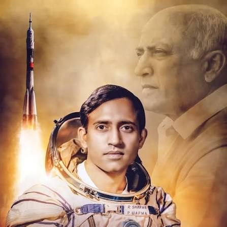
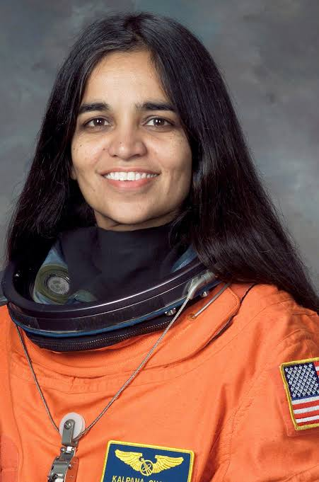
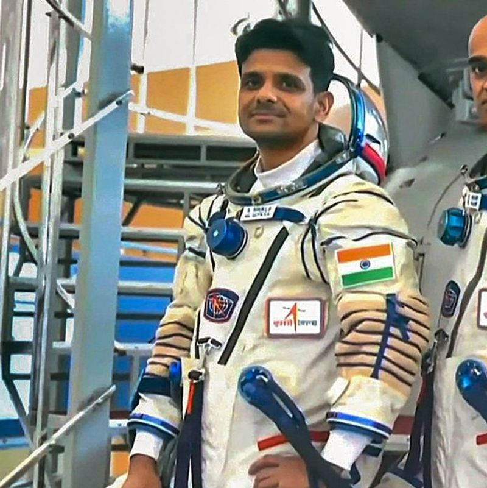
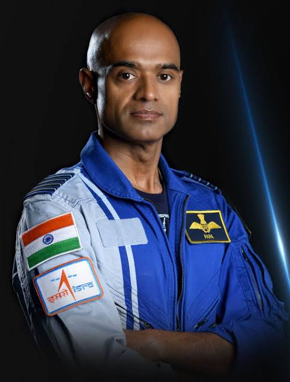
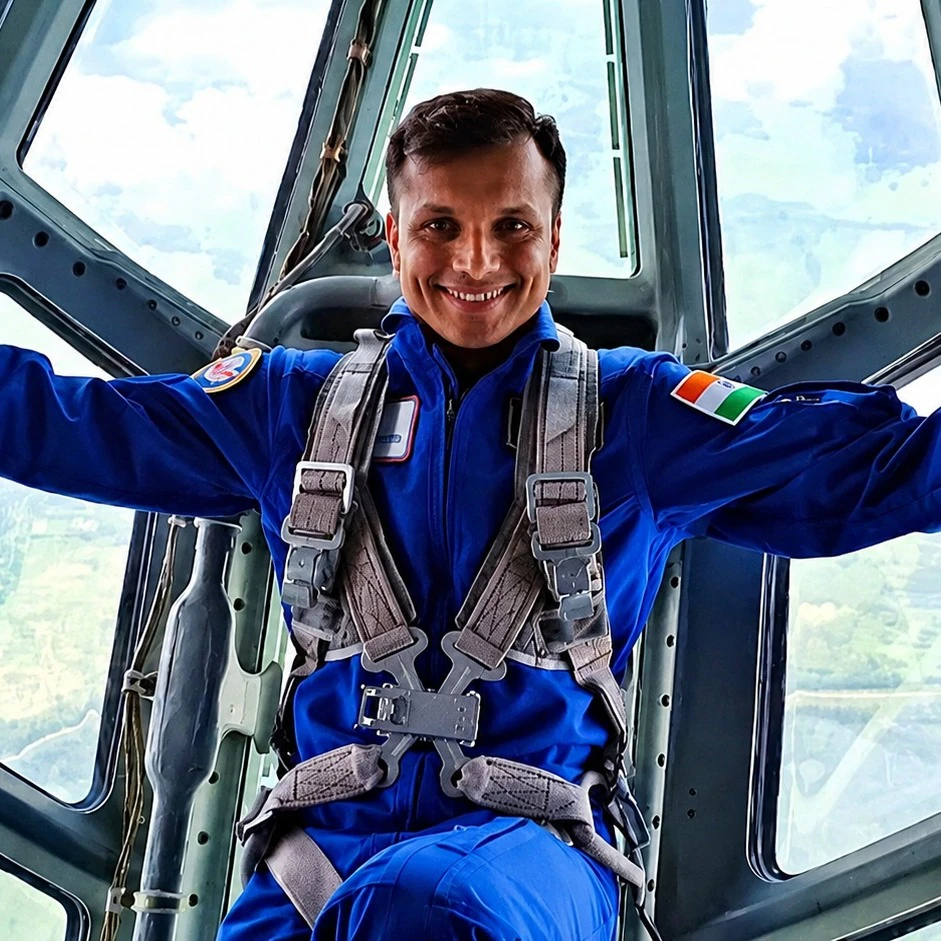
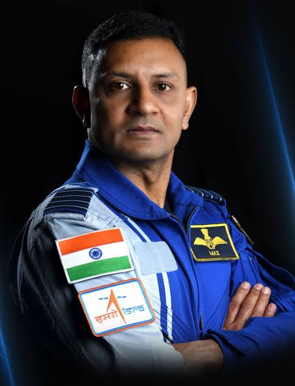

ASTROVERSE
Explore the Unknown
Explore the Unknown
Meet the people who carried the spirit of India beyond Earth and inspired generations to dream bigger.

Indian Air Force Pilot & Astronaut
Rakesh Sharma became the first Indian citizen to travel into space in 1984 aboard the Soviet Soyuz T-11 mission.
Courage and discipline can turn ambitious dreams into historic achievements.

Aerospace Engineer & NASA Astronaut
Born in Karnal, India, Kalpana Chawla became an astronaut and flew on two Space Shuttle missions.
Education, determination and curiosity can take us beyond the limits we imagine.

ISRO Gaganyatri & Pilot
Shubhanshu Shukla became the first Indian to visit the International Space Station during the Axiom-4 mission.
Space exploration combines science, teamwork, discipline and continuous learning.

Indian Air Force Pilot & Gaganyatri
Prasanth Balakrishnan Nair is one of India's selected Gaganyaan astronauts and has undergone astronaut training.
Preparation and teamwork are essential when working toward challenging goals.

Indian Air Force Pilot & Gaganyatri
Ajit Krishnan is one of the astronaut-designates selected for India's Gaganyaan human spaceflight programme.
Strong skills, discipline and consistent training help prepare us for difficult missions.

Indian Air Force Pilot & Gaganyatri
Angad Pratap is one of the four astronaut-designates selected for India's Gaganyaan programme.
Great achievements require patience, teamwork and the willingness to keep improving.
Their journeys remind us that space exploration is not only about reaching another world. It is also about knowledge, courage and never stopping our curiosity.
Knowledge is the foundation of every great mission.
Be brave enough to explore beyond your comfort zone.
Questions and curiosity lead to new discoveries.
Space exploration is achieved through collaboration.